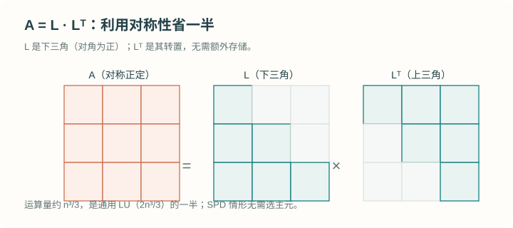
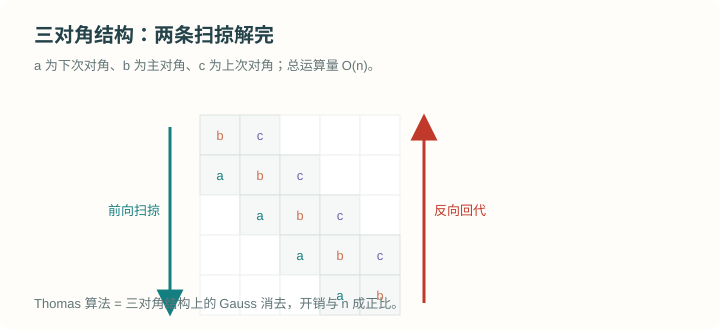

CHAPTER 16 · NUMERICAL ANALYSIS
Cholesky 分解与追赶法：结构即效率
上一章的 LU 对任意矩阵都适用。但如果矩阵对称正定，或干脆是三对角的，通用算法就浪费了这些结构。本章沿“用掉越多结构、成本越低”这条线，从 Cholesky 走到最快的追赶法。
01 · 结构决定成本
同样是求解 Ax=b，用掉多少结构，成本就差多少。对 n×n 矩阵：
| 方法 | 适用的矩阵 | 运算量 |
|---|---|---|
| 通用 LU（含选主元） | 任意非奇异矩阵 | ≈ 2n³/3 |
| Cholesky / LDLᵀ | 对称正定 | ≈ n³/3 |
| 追赶法（Thomas） | 三对角（常为对称正定） | ≈ 8n |
从 2n³/3 到 n³/3 是少了一半，而从立方降到线性则是量级的变化。这些节约都不是“更聪明的技巧”，而是把矩阵的结构当成了算法设计的一部分。
02 · 对称正定：为什么可以不选主元
矩阵 A 对称正定（SPD）指 A=Aᵀ 且对所有非零向量 x 有
等价条件包括：所有特征值 >0；所有顺序主子式 >0。后者直接带来一个结论：Cholesky 消去过程中的主元总为正，不需要换行选主元。所以 SPD 求解器的代码可以比通用 LU 简单得多。
SPD 矩阵不是罕见特例：有限元刚度矩阵（应变能 xᵀKx>0）、协方差矩阵、核方法里的 Gram 矩阵、凸问题的 Hessian、Laplace 算子离散化，都天然 SPD。
03 · Cholesky 分解
对 SPD 矩阵 A，存在唯一的下三角矩阵 L（对角元为正）使得
它是对称版 LU：只算半个三角，且对角元从平方根得到。逐列公式为
一个三位十进制数字就能手算的例子：
A = [[ 4, 2, -2],
[ 2, 5, 1],
[-2, 1, 6]]
l11 = sqrt(4) = 2；l21 = 2/2 = 1；l31 = -2/2 = -1
l22 = sqrt(5 - 1) = 2；l32 = (1 - (-1)(1))/2 = 1
l33 = sqrt(6 - 1 - 1) = 2
L = [[ 2, 0, 0],
[ 1, 2, 0],
[-1, 1, 2]] # 验证 LLᵀ = A
A=LLᵀ：只需存半个下三角 L，Lᵀ 是它的转置。运算量约 n³/3，是通用 LU 的一半，且 SPD 情形无需选主元。04 · LDLᵀ：去掉平方根
Cholesky 要做 n 次开方。改进平方根法把对角因子单独拿出来：
其中 L 是单位下三角（对角全为 1），D=diag(d₁,…,dₙ)。这样完全没有开方，dⱼ 可以取很小甚至负值，因此它还能用来判定对称矩阵是否正定：所有 dⱼ>0 才是 SPD。求解时只需多一步按 D 缩放（z=y/d）。
两者关系很直接：把 Cholesky 的 L 各列除以对角元、把平方根归入 D，就得到 LDLᵀ。对接近奇异的 SPD 矩阵，LDLᵀ 不会像 Cholesky 那样在开方时放大误差。
05 · 追赶法：三对角上的 O(n)
三对角系统只在主对角 b 与两条次对角 a, c 上有非零元：
Thomas 算法就是针对它的 Gauss 消去：前向扫掠逐个消去下次对角线，反向回代从最后一行往上解。因为每行只涉及三个未知量，整个过程只有 O(n) 次运算，也不需要二维存储。

a 为下次对角、b 为主对角、c 为上次对角。前向扫掠自上而下消去 a，反向回代自下而上求出 x。当矩阵是对称正定且严格对角占优（如 A=tridiag(−1,2,−1)，来自一维热方程或样条的离散化）时，Thomas 算法不需要选主元也不会遇到零主元。三次样条插值的弯矩方程、隐式差分格式、Yule–Walker 方程都属于这一类。
06 · 实验与失败边界
下面用两个可复现的断言把“结构好用”固定下来：Cholesky 分解出的 L 与手算一致；Thomas 算法在 O(n) 下把三对角系统解到机器精度级。
import math
def cholesky(A): # 仅适用 SPD；遇非正平方根则失败
n = len(A)
L = [[0.0] * n for _ in range(n)]
for j in range(n):
s = A[j][j] - sum(L[j][k] ** 2 for k in range(j))
if s <= 0:
raise ValueError("not SPD at column %d" % j)
L[j][j] = math.sqrt(s)
for i in range(j + 1, n):
L[i][j] = (A[i][j] - sum(L[i][k] * L[j][k] for k in range(j))) / L[j][j]
return L
def thomas(a, b, c, d): # 三对角：前向扫掠 + 反向回代
n = len(b)
bp, dp = b[:], d[:]
for i in range(1, n):
m = a[i-1] / bp[i-1]
bp[i] -= m * c[i-1]
dp[i] -= m * dp[i-1]
x = [0.0] * n
x[-1] = dp[-1] / bp[-1]
for i in range(n - 2, -1, -1):
x[i] = (dp[i] - c[i] * x[i+1]) / bp[i]
return x
L = cholesky([[4, 2, -2], [2, 5, 1], [-2, 1, 6]])
assert [round(v, 9) for v in L[0]] == [2.0, 0.0, 0.0]
assert [round(v, 9) for v in L[1]] == [1.0, 2.0, 0.0]
assert [round(v, 9) for v in L[2]] == [-1.0, 1.0, 2.0]
n = 6 # tridiag(-1, 2, -1) 是 SPD
x_true = [math.sin(math.pi * (i + 1) / (n + 1)) for i in range(n)]
d = [2 * x_true[i] for i in range(n)]
for i in range(1, n):
d[i] += -x_true[i-1]
for i in range(n - 1):
d[i] += -x_true[i+1]
x = thomas([-1.0] * (n-1), [2.0] * n, [-1.0] * (n-1), d)
assert max(abs(x[i] - x_true[i]) for i in range(n)) < 1e-12
try:
cholesky([[1.0, 2.0], [2.0, 1.0]]) # 特征值为 -1, 3：非正定
except ValueError:
pass
else:
raise AssertionError("should have failed on an indefinite matrix")失败边界。Cholesky 与 LDLᵀ 只在 SPD 情形成立（非 SPD 时主元会变负，如图中演示）。Thomas 算法要求消去过程中主元不为零；严格对角占优或 SPD 的三对角矩阵满足这一点，否则需要选主元，而沿行交换会破坏三对角结构，须改用带状存储的带选主元版本。把结构用满的前提，是先确认结构真的存在。
原始资料与延伸阅读
本章将文献结论与本文独立构造的数值示例严格区分；复杂度与图示为教学说明。
- SciPy · scipy.linalg.cholesky：基于 LAPACK 的 Cholesky 分解接口与错误语义（非正定时拒绝）。
- SciPy · scipy.linalg.solve_banded：带状/三对角系统的高效求解（追赶法族）。
- E. Anderson et al., LAPACK Users' Guide。SIAM，第三版，1999；Cholesky、LDLᵀ 与带状直接法。